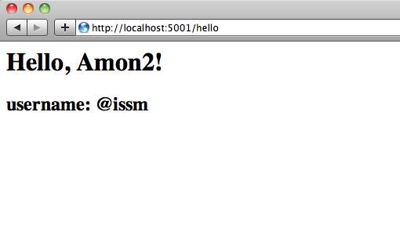
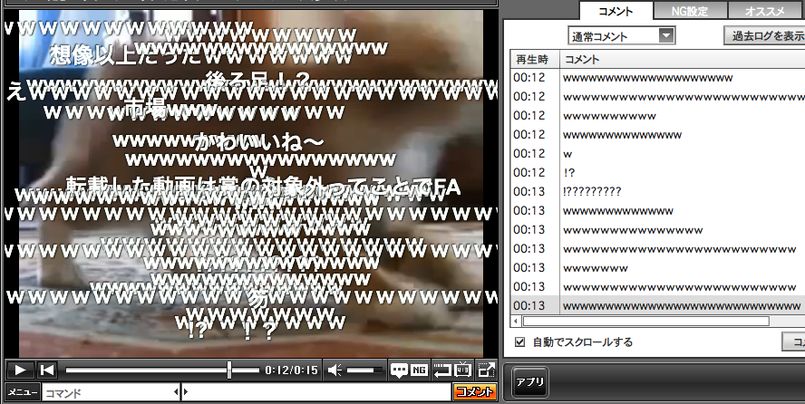

表示テスト
表示テスト
- 表示テスト
- 表示テスト
use 5.12.0;
say 'hello';
% echo hello
hello
OSC 2011 Nagoya での展示
または
Amon2でWebアプリを作ってみる
2011-11-20
Nagoya.pm #2 (#nagoyapm)
岩田 享 / issm
type "?" to show help
おまえだれよ？
- 岩田 享（いわた）
- LLP Meganelab
@issmhttp://blog.iss.ms/https://twitter.com/issmhttp://*/issm
アジェンダ
- 展示用Webアプリ概要
- Amon2のほんのさわり
- 展示用Webアプリの少し奥
- まとめ
アジェンダ
展示用Webアプリ概要
いきさつ
- OSCで何する?
- PerlでWebアプリとか
- ワンライナーを投稿してみたり
- TwitterでOAuth
- DotCloud使ってみようか
- あとMongoDBとか
- 開発はGitHubで
とりあえずできた
とりあえずできた
（当日の夜）
デモ
アジェンダ
Amon2のほんのさわり
Amon2とは
-
Amon2 is simple, readable, extensible, STABLE, FAST web application framework based on Plack. http://search.cpan.org/~tokuhirom/Amon2-3.27/lib/Amon2.pm
- 「薄い」
- 「コンテキスト」
- プラグインで簡単に拡張できる
- http://d.hatena.ne.jp/tokuhirom/20110713/1310510015
Amon2のほんのさわり
簡単スタートガイド
% cpanm Amon2
% amon2-setup.pl myproj
% cd myproj
% plackup
http://localhost:5000/
Amon2のほんのさわり
ディスパッチャ
lib/myproj/Web/Dispatcher.pm
any '/' => sub {
my ($c) = @_;
$c->render('index.tt');
};
$c が「コンテキスト」オブジェクト
tmpl/index.tt がテンプレート
Amon2のほんのさわり
ディスパッチャ
lib/myproj/Web/Dispatcher.pm
get '/hello' => sub {
my ($c) = @_;
$c->render('hello.tt', { username => '@issm' });
};
tmpl/hello.tt
Hello, Amon2!
username: [% username %]
Amon2のほんのさわり
Amon2のほんのさわり
コンフィグ：ファイル
config/*.pl
development.pldeployment.pltest.pl
環境変数 PLACK_ENV の値のものが読まれる
% PLACK_ENV=test plackup # test.pl% plackup # development.pl
Amon2のほんのさわり
コンフィグ：アクセス
コンテキストオブジェクトの config プロパティ
# in Dispatcher
my $config = $c->config;
my $foo = $c->config->{hello}{foo};
[% c().config.hello.foo %]
Amon2のほんのさわり
プラグイン
いろいろ拡張できる
# in myproj::Web.pm
__PACKAGE__->load_plugins(
'Web::CSRFDefender', # Amon2::Plugin 以下
'+myproj::Plugin::FooBar', # 任意
);
# in Dispatcher
$c->render_json({ foo => bar });
$c->foobar();
Amon2のほんのさわり
プラグイン
いろいろ拡張できる
package myproj::Plugin::FooBar;
use warnings;
use Amon2::Util;
sub init {
my ($class, $c, $conf) = @_;
Amon2::Util::add_method(
$c, 'foobar', \&_foobar,
);
}
sub _foobar { warn 'foobar!!' }
1;
Amon2のほんのさわり
プラグイン
# in myproj::Web.pm
__PACKAGE__->load_plugins(
'+myproj::Plugin::FooBar',
);
# in Dispatcher
$c->foobar();
foobar!! at lib/myproj/Plugin/FooBar.pm line 10.
127.0.0.1 - - [20/11/2011:12:27:26 +0900] "GET /hello HTTP/1.1" 200 132 "-" "Mozilla/5.0 (Macintosh; Intel Mac OS X 10_6_8) AppleWebKit/534.51.22 (KHTML, like Gecko) Version/5.1.1 Safari/534.51.22"
Amon2のほんのさわり
トリガ
# in myproj::Web
__PACKAGE__->add_trigger(
HTML_FILTER => sub { ... }
);
__PACKAGE__->add_trigger(
BEFORE_DISPATCH => sub { ... }
);
__PACKAGE__->add_trigger(
AFTER_DISPATCH => sub { ... }
);
未勉強＞＜
Amon2のほんのさわり
コンテキスト：2つの「コンテキスト」
myprojmyproj::Web←myprojを継承
ソースを見てみると．．．
DBIプラグインはmyprojでロードされているWeb::CSRFDefenderプラグインとかはmyproj::Webでロードされている
Amon2のほんのさわり
コンテキスト：個人的解釈
- コンテキスト == 利用シーン
- 例：CLI と Web
- 任意のシーンで使えたい →
myprojで - Webに特化でおｋ →
myproj::Webで - CLIシーン向けに
myproj::CLIとか作るのもあり
→ まぁ不要
アジェンダ
展示用Webアプリの少し奥
使ったモジュール
MongoDBOAuth::Lite::ConsumerData::ValidatorSmart::ArgsMouse::Util::TypeConstraintsJSON（Web::JSONプラグインを知らなかった）
アジェンダ
まとめ
- Amon2簡単
One More Thing...
ニコニコ動画観てますか？
よく観ますよね！
ニコニコ動画にて
観てると．．．
ニコニコ動画にて
作ってみた
作りなおしてみた
（3年ぶり1度目）

にこぐらふ
http://www.nicograph.jp/
にこぐらふの概要
主な機能
- 対象の動画IDをキューに追加
- コメントを取得
- 文字「w」についてほげほげ
- グラフ生成

にこぐらふの概要
グラフ表示ページ
にこぐらふの概要
だいたいの構成
- nginx
- MySQL + Mroonga (groonga storage engine)
-
イベント駆動プロセス
- コメント取得
- 計算ごにょごにょ
- グラフ生成
- TwitterへPOST
にこぐらふの概要
だいたいの構成
- Amon2
- Teng
- AnyEvent::Filesys::Notify
- Chart::Clicker
- XML::LibXML
- LWP::UserAgent
- OAuth::Lite
- Net::Twitter::Lite
デモ
まとめ
- 3年以上ぶりに作りなおしたｗｗｗｗｗｗｗ
- 少しは今風になったかなｗｗｗｗｗ
おまけ
ネトラン 2008年11月号
「ベスト・オブ・悪用厳禁ツール&サイト 2008
サイト部門・検索カテゴリ」
金賞